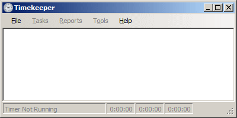
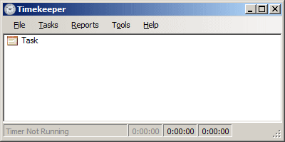

The application should now look like so:


If you don't have a lot of time to mess around, you're in luck because Timekeeper lets you hit the ground running very quickly. If you've already installed and launched the program, you're good to go. Let's give it a run.
At its most fundamental level, you've now done everything Timekeeper was made to do: keeping track of the time you spend on tasks. Of course, creating data without ever looking at it is rather pointless. Timekeeper lets you examine your time-tracking data in a number of ways.
As you've probably already guessed, nope! It would be a pretty poor time-tracking application that only let you record a single task. But that's one of the nice things about Timekeeper: it's complexity grows with you. If you don't need advanced features, they're not in your face. When you're ready for them, just turn 'em on.